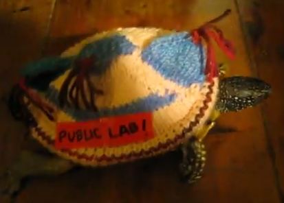

open-water
publiclab+friends
@ Parts & Crafts 2/2/2014
road salt


- applied to roads in winter
- washes off roads into lakes and streams
- seeps into groundwater and private wells
- affects freshwater organisms
combined sewer overflows
cyanobacteria


- starves marine organisms of oxygen
- makes animal sick -- including us!
hydraulic fracturing
farm runoff

- bad for us, bad for otters

monitoring?


- Sample collection, lab analysis: labor intensive + costly
- Data logger sensor tech: ~$1000 (~$10000)
- Typical sensors: proprietary hardware + data
... open it up!
- Mark Green
- Mary Martin
- Jon Chapell
- Catherine D'Ignazio
- Patrick Herron
- Jeff Walker
- Craig Versek
- Ben Gamari
- Laura Dietz
- Paula Rees
- Jennifer Welbourn
- Katharina Reinecke
- Andy Anderson
- publiclab community + others!
publiclab open-water
--> building an open source water quality sensor!
- deployed in rivers, streams, private wells ...
- collect weeks later
- low-power
- low-cost
- accessible
- provides ongoing baseline --> detect anamolies
- temp + conductivity + depth (+ turbidity? + ?)
- fully open source
- Mystic River Open Water pilot project
- crowdfunding partnership: Public Lab + IOBY

remote + independent + friendly field logger electronics
- electronics: the mchck + custom shields
- conductivity circuit inspired by practicalMaker
- enclosure: PVC pipe + optional 3D printed end-cap
- power: lasts months on 3 AAA's
- entirely open source
- < $100
show + tell


- electronics
- enclosure
- user interface
- temp, conductivity measurements
- depth, optical measurements
online data viz
- Mary Martin's prototype
- Jeff Walker's prototype
- Amherst College open water hackathons
civic engagement

{kind=link}
{kind=link}
- Catherine's babbling brook project
- the thermal-flashlight project
- STE(A)M curricula
- grassroots workshops
- MyRWA + Amherst Media + AMS + NH crew + ...
next steps
- depth
- optical measurements
- testing
- calibration
- telemetry
- distribution plan
- increased accessibility
- STEM, STEAM, workshop planning
- other applications?
- e.g. conductivity can be an early warning of contamination
thanks!
